Anota Aí — Manual do usuário
Versão 0.9.37
Registre suas ideias em notas, os planos do dia em tarefas e os itens de compra em listas. Você pode reabrir este guia a qualquer momento pelo cartão “Manual do usuário” em Configurações.
1. Primeiro uso e configuração da tela
Anota Aí é um aplicativo que coleta notas em gavetas por tópico. Ao tocar na gaveta, uma lista de notas é aberta e, ao tocar em um memorando, uma tela para escrever o conteúdo é aberta.
Encontre ferramentas no cabeçalho
A busca no topo pesquisa em todas as gavetas. O menu (☰) contém Nova gaveta, Importar gaveta, Manual, Configurações e Lixeira. O nome do armário continua visível.
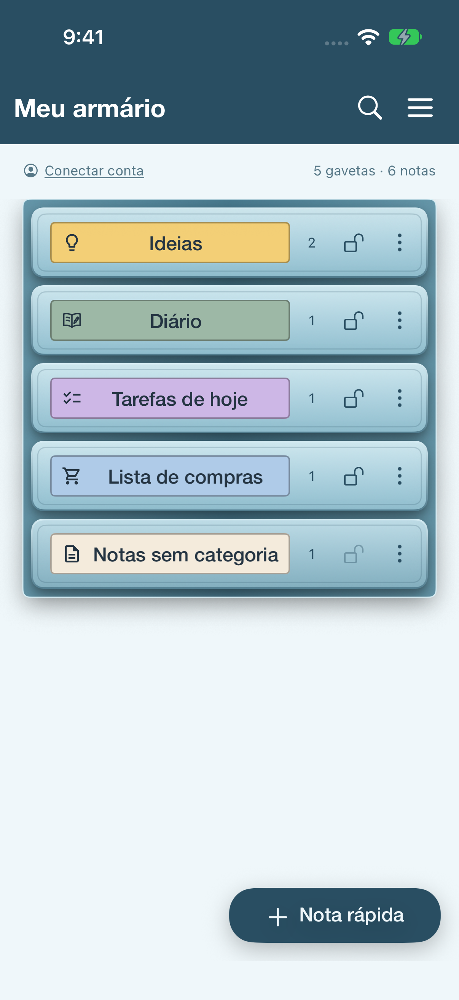
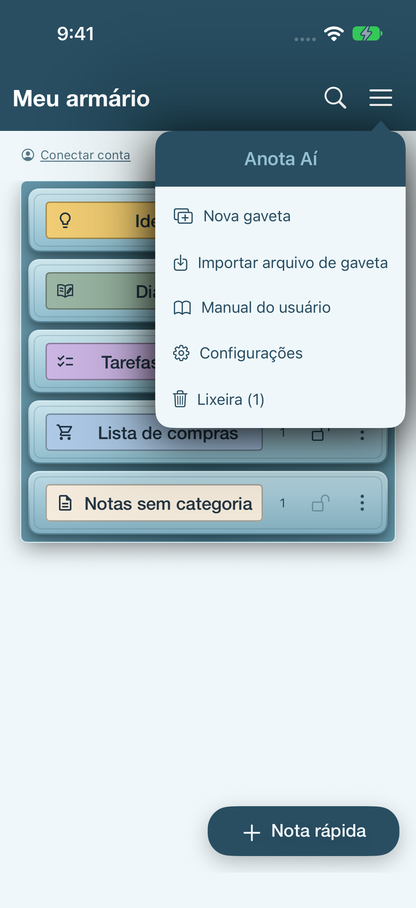
Crie sua primeira nota
Escolha menu (☰) → Nova gaveta, digite um nome e abra a gaveta para criar uma nota. O texto é salvo automaticamente.
Para anotar imediatamente, pressione ＋ Nota rápida na parte inferior da tela. Você começa com um memorando não classificado e pode selecionar a gaveta na qual deseja salvá-lo usando o nome da gaveta no cabeçalho do memorando.
Qual gaveta devo usar?
| Gaveta | usar |
|---|---|
| gaveta normal | Coletamos artigos, fotos, imagens e arquivos por tópico, como ideias, viagens e trabalho. |
| Diário | Mantenha anotações por data e leia-as em um calendário ou lista de registros. |
| Tarefas de hoje | Gerencie tarefas pendentes por data, hora, notificações, cronograma de repetição e status de conclusão. |
| Lista de compras | Gerencie itens, quantidade e status de compra de cada item de mercearia. |
| Notas sem categoria | Reúna todas as anotações para as quais você ainda não decidiu uma gaveta. |
Renomear cômoda
Abra menu → Configurações → Armário e edite o nome. Use um nome não vazio de até 40 caracteres. Os temas ficam abaixo no mesmo cartão.
Tela ampla e tela cheia
No iPad com tela larga, selecione a gaveta à esquerda para ver a lista ou uma nota à direita. Toque no botão de tela cheia para ampliar o conteúdo.
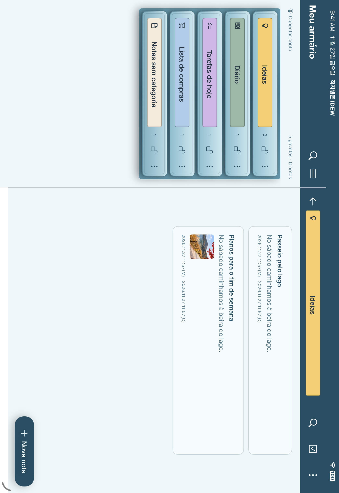
2. Criação e gerenciamento de gavetas
Uma gaveta nova começa com uma cor de etiqueta livre, se houver. A marca pequena indica que outra gaveta já usa aquela cor. Ainda é possível escolhê-la.
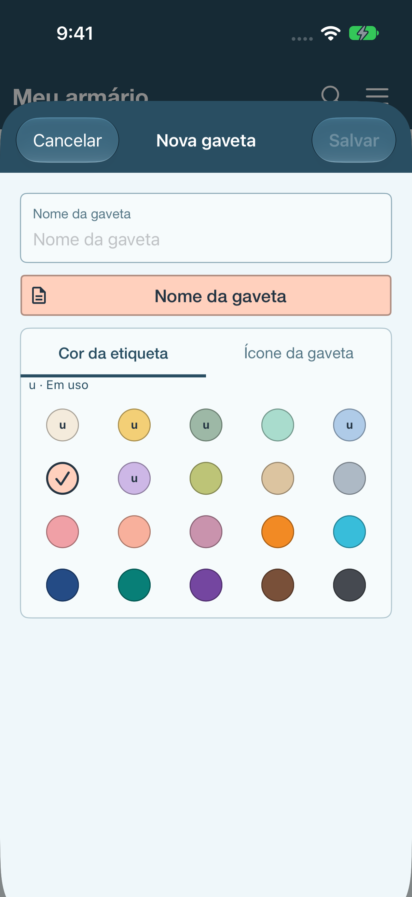
Crie uma gaveta
Escolha menu (☰) → Nova gaveta. Para um arquivo existente, use Importar gaveta nesse menu.
Alterar nome, cor do rótulo e ícone
Clique em veja mais(…) no lado direito da gaveta e selecione Configurações de gaveta. Altere o nome, escolha um círculo ou ícone colorido e torne-o Salvar. A etiqueta exibe o ícone selecionado junto com o nome da gaveta. Nomes longos fluem dentro do espaço de nomes.
Ver mais notas não categorizadas abre diretamente as configurações da gaveta. O bloqueio e a criptografia são guiados por Capítulo 11.
Alterar ordem das gavetas
Pressione e segure a gaveta e arraste-a para cima ou para baixo até o local desejado. A localização das notas não classificadas é fixa.
Excluir uma gaveta
Excluir uma gaveta move as notas para a Lixeira, preservando origem, anexos e datas de exclusão anteriores. A gaveta criptografada exige autenticação e mantém a proteção. Sem a gaveta original, uma nota comum volta às notas não classificadas; uma nota criptografada volta a uma gaveta recuperada com o mesmo ID. As outras notas ficam na Lixeira.
Recrie uma gaveta dedicada
Diário, Tarefas Hoje e Lista de Compras mantêm suas funções exclusivas mesmo se você alterar o nome ou ícone. Gavetas dedicadas excluídas podem ser criadas em Configurações → Gaveta Dedicada. As notas antigas não retornarão automaticamente para a gaveta dedicada recém-criada.
↑ Para o índice3. Escreva e edite notas
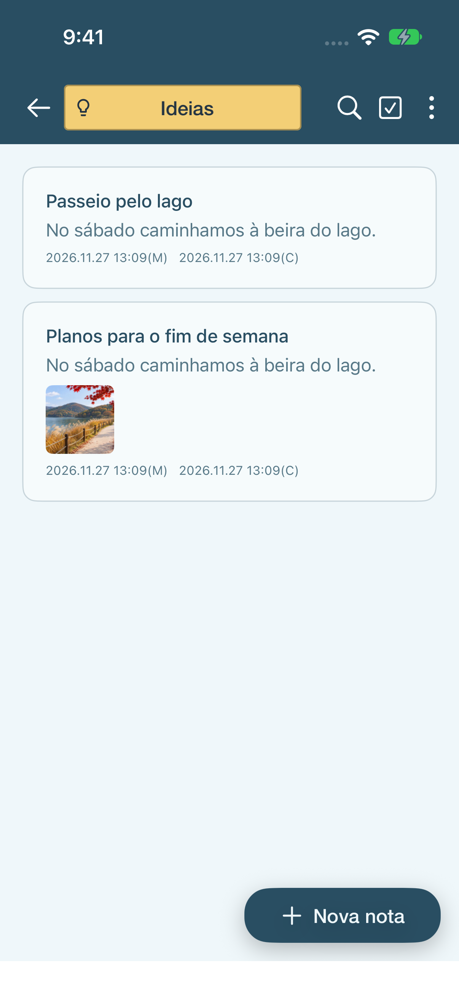
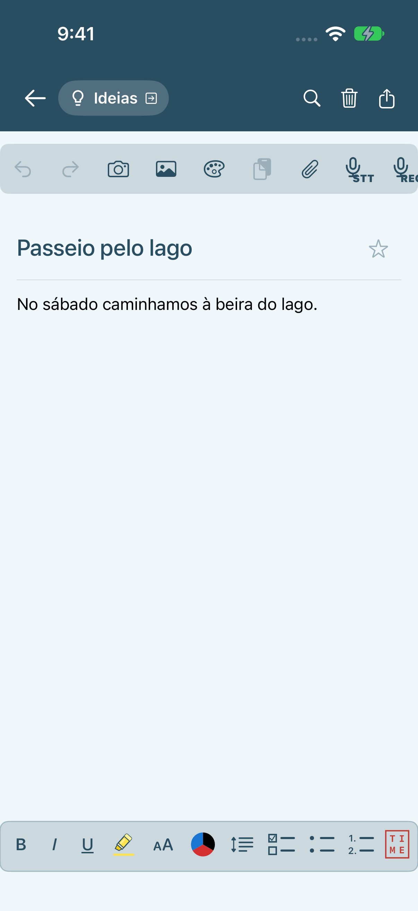
Novas notas e salvamento automático
＋ Nova nota na gaveta cria uma nota na gaveta atual. ＋ O memorando rápido começa a partir de um memorando não classificado e, antes de salvar pela primeira vez, você pode selecionar a gaveta a ser salva pressionando o nome da gaveta no cabeçalho e confirmar com o botão de seleção. Quando você seleciona a lista de tarefas ou compras de hoje, ela muda para um formato de lista que corresponde a essa gaveta.
Quaisquer alterações inseridas serão salvas automaticamente sem um botão Salvar. Você pode reabrir o que escreveu voltando à lista. Basta fechar o novo memorando sem inserir nada. Para se livrar da própria nota Excluir o título ou corpo de um memorando já salvo é editar o conteúdo., mova-a para a lixeira. Se aparecer uma mensagem de falha ao salvar, verifique as informações e tente novamente.
Classifique a lista
Tarefas de hoje e Diário usam a data do registro, não a edição. Escolha data mais recente ou mais antiga primeiro. Favoritos não alteram a ordem por data nas tarefas.
Marque notas importantes
Se você clicar na estrela clara (☆) à direita do título, ela mudará para uma estrela preenchida (★). Pressione novamente para desligá-lo. Você pode exibir notas importantes primeiro em Configurações → Visualização de notas. O título da data das notas de tarefas de hoje não exibe uma estrela de nota. Uma estrela após um item da lista indica a importância dessa tarefa ou item.
Mover para outra gaveta
- Abra uma nota normal e pressione o ícone mover próximo ao nome da gaveta no cabeçalho.
- Selecione a gaveta normal que deseja mover e pressione o botão mover. A seleção sozinha não se move e o cancelamento mantém a gaveta atual. Confirme quando solicitado a bloquear ou remover a proteção.
As notas nas tarefas de hoje, na lista de compras e no diário não podem ser movidas diretamente para outra gaveta e o ícone de movimentação não é exibido. Para obter informações sobre como mover várias notas de uma vez, consulte Selecione várias notas.
Guia de ícones da barra de ferramentas de edição de notas
Abaixo está a barra de ferramentas para notas gerais. Os ícones de luz não estão disponíveis no momento. Para formatação de fonte, primeiro selecione o texto a ser alterado e depois aplique-o. Ferramentas dedicadas para a lista de tarefas/compras de hoje são explicadas em Capítulo 6 e Capítulo 8.
Barra de ferramentas superior: Desfazer, Anexar, Voz
| ícone | nome | O que você faz |
|---|---|---|
 | Desfazer | Reverte o conteúdo do texto alterado durante a edição atual para o estado anterior. Se não houver nada para reverter, será exibido em cor clara. |
 | Refazer | Reaplica as alterações revertidas no corpo. Se não houver nada para reaplicar, será exibido em cor clara. |
 | câmera | Tire uma nova foto e anexe-a ao memorando. |
 | Fotos | Selecione e anexe uma foto do seu telefone. |
 | Desenho | Faça um desenho em uma tela branca e coloque-a em uma nota. |
| Anexar arquivo | Selecione um arquivo e anexe-o à nota. Se você tocar no arquivo anexado, poderá abri-lo com um aplicativo compatível. | |
 | entrada de voz | Digite o que você disse em letras. Ele é colocado no título ou texto na posição onde a entrada de voz foi iniciada e substitui o caractere selecionado, se houver. |
 | Registro anexado | Grave sua voz ou som e anexe-o como um arquivo de áudio. Ao contrário de STT, não é convertido em letras. |
Barra de ferramentas inferior: formato da fonte, lista, data
| ícone | nome | O que você faz |
|---|---|---|
 | Audacioso | Exibe o texto selecionado em negrito. Pressione novamente para desativar a exibição em negrito. |
 | dica | Inclina o texto selecionado. Pressione novamente para desligá-lo. |
 | sublinhado | Sublinha as letras selecionadas. Pressione novamente para desligá-lo. |
 | Realçar | Adiciona um fundo amarelo atrás do texto selecionado para enfatizá-lo. |
 | Tamanho da fonte | Abra o menu Tamanho da fonte e diminua para A− ou aumente para A+. Primeiro selecione o personagem que deseja alterar. |
 | cor da fonte | Selecione a cor da fonte entre preto, vermelho ou azul. |
 | Espaçamento entre linhas | Aumente ou diminua o espaçamento entre linhas no corpo do texto. Isso é diferente da função para alterar o tamanho da fonte. |
 | Lista de caixas de seleção | Transforma a linha atual em uma lista de verificação ou desformata a lista de verificação. Você pode marcar a conclusão clicando na caixa de seleção. |
 | lista com marcadores | Substitui a linha atual por uma lista começando com um ponto. |
 | Lista numerada | Substitui a linha atual por uma lista de números. Os números do próximo item continuam automaticamente. |
 | carimbo de data/hora | Insere a data e hora atuais na posição do cursor no texto. |
Quando você coloca o cursor no título, a barra de ferramentas de formatação de texto fica oculta e reaparece quando você clica no texto. Se sua tela for estreita, você pode deslizar a barra de ferramentas para a esquerda ou para a direita para visualizar outras ferramentas. Em tela inteira, você pode deslizar a barra de ferramentas para cima ou para baixo.
Apenas um formato entre caixa de seleção, marcador ou lista de números é aplicado a uma linha. O formato muda quando você pressiona um botão de lista diferente. Quando você pressiona Enter em uma lista numérica, o próximo número continua, e quando você pressiona Enter em um item vazio, a lista termina. As restrições de título, corpo e anexos podem ser verificadas em Limitações de capacidade e comprimento.
↑ Para o índice4. Anexe e compartilhe fotos, imagens e arquivos
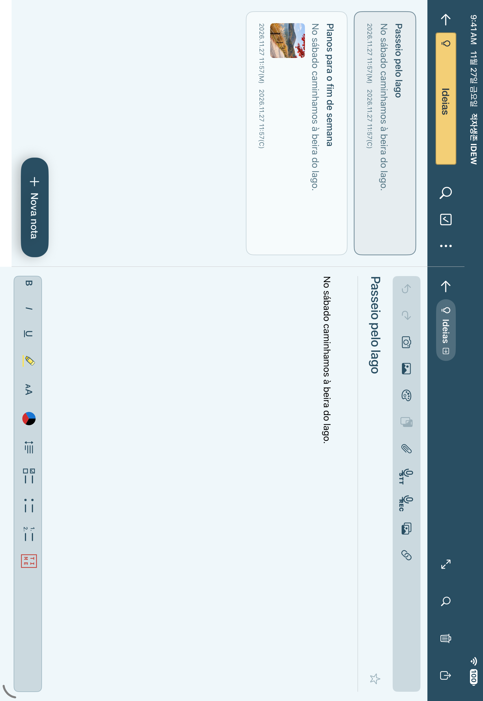
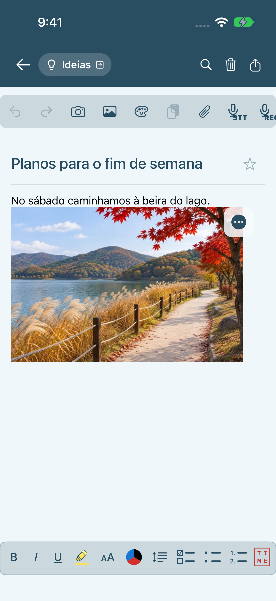
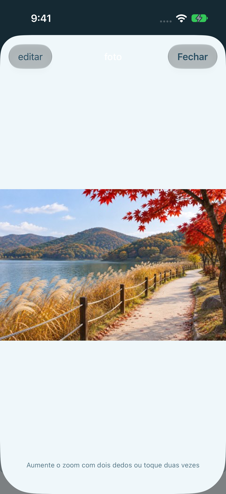
Insira fotos, gravações e arquivos
Na barra de ferramentas superior de um memorando geral, selecione Câmera, Foto, Paint, Anexar arquivo, Anexar gravação. Conceda as permissões necessárias do dispositivo e tire uma foto ou selecione um arquivo. Consulte Nota sobre edição de informações da barra de ferramentas para obter as funções de cada ferramenta e as diferenças no anexo de entrada/gravação de voz.
Alterar a localização de fotos e imagens
Mude a posição clicando em Mais (…) no canto superior direito da foto → Mover para cima ou mover para baixo. Você também pode manter a foto pressionada e arrastá-la para cima ou para baixo. A linha mostrada é onde você irá colocá-la e ela rolará automaticamente quando você a arrastar para a borda da tela. Durante a edição, você pode reverter a movimentação com Desfazer.
Mover anexo para outra nota
- Fotos, imagens, gravações e arquivos gerais a serem movidos… No menu, toque em Mover para outra nota.
- Selecione a gaveta normal que contém a nota que deseja receber. Desbloqueie ou descriptografe, se necessário.
- Selecione a nota que deseja receber e pressione Ir. Você também pode encontrar o título de uma nota pesquisando.
Mova um anexo de cada vez. Ele sai da nota original e é adicionado ao final da nota de destino. Gavetas dedicadas, como Diário, Tarefas de hoje, Lista de compras e Backup, não podem ser a origem nem o destino. Ao mover de uma gaveta criptografada para uma sem criptografia, confira o aviso sobre a mudança de proteção. Se cancelar a movimentação ou a autenticação, o anexo permanece na nota original.
Enquanto a nota original estiver aberta, use Desfazer na barra superior para devolver o anexo à posição original e Refazer para movê-lo novamente. As edições anteriores continuam no histórico. O desbloqueio ou a autenticação de criptografia podem ser solicitados outra vez. Se cancelar a autenticação ou a operação falhar, nenhuma das notas será alterada e você poderá tentar novamente depois. Fechar a nota limpa o histórico de desfazer dessa sessão de edição.
Veja maior e gire
Clique em uma foto ou imagem para abri-la em tamanho maior. Use dois dedos para aumentar ou diminuir o zoom ou toque duas vezes para aumentar o zoom. Se você alterar a direção com o botão de rotação e salvá-lo, Os anexos existentes na nota serão substituídos por imagens giradas. não será salvo e se você fechá-lo, a rotação não será aplicada. Isso não alterará a galeria original do seu telefone.
Desenhando e Marcando Fotos
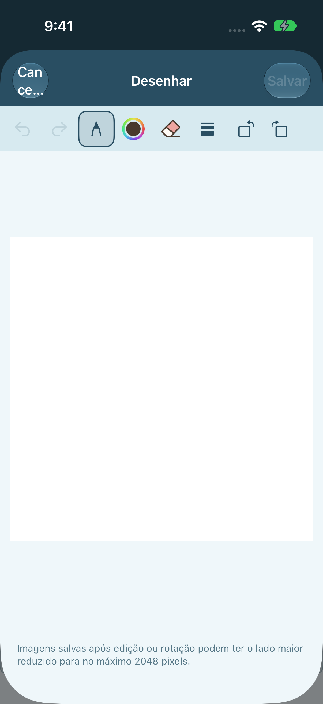
- Um desenho em branco começa com o Paint na barra de ferramentas superior. Para exibi-lo sobre uma foto, abra-o maior e toque em Editar.
- Escolha uma cor, defina a espessura da caneta usando o controle deslizante abaixo e desenhe na tela.
- Quando você ativa a Borracha, o controle deslizante muda para o tamanho da borracha. Desligue a borracha novamente ou selecione uma cor para retornar à caneta.
- Ajuste os traços da imagem atual com Desfazer/Refazer.
- Quando a imagem em branco for concluída, a edição da foto será anexada à nota quando você clicar em Salvar como cópia. Fechar com o X esquerdo e descartar as alterações não as salvará.
Se você substituir uma foto e salvá-la, Uma cópia do novo anexo é adicionada e o anexo existente permanece. Se você não gostar da cópia salva, exclua-a. Uma vez salvos, os traços dessa cópia não podem ser apagados revertendo a edição anterior. A resolução pode diminuir durante o processo de edição/rotação e salvamento, portanto guarde o original de alta resolução separadamente.
Você também pode visualizar o manual somente leitura e fotos de diários anteriores em formato maior. A tela ampliada no estado somente leitura exibe apenas um botão Fechar.
Compartilhar como PDF
- Abra uma nota e pressione o botão Compartilhar no cabeçalho.
- Na janela de compartilhamento do iOS, selecione o aplicativo e destinatário desejado, como KakaoTalk.
Envie o título, corpo, formato de texto, fotos e imagens em PDF. Os destinatários podem lê-lo sem Anota Aí. Os arquivos gravados e gerais exibem apenas o nome e o tipo, e o arquivo original não é incluído no PDF. Se você fechar a janela de compartilhamento, ela não será enviada. O PDF enviado é uma cópia no momento do compartilhamento e não reflete quaisquer edições subsequentes na nota.
↑ Para o índice5. Mantenha um diário
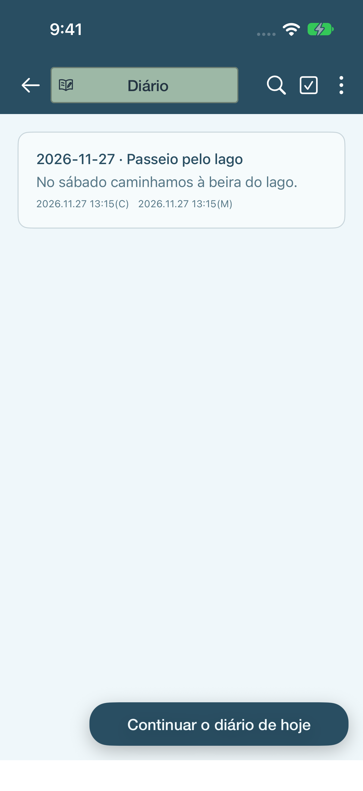
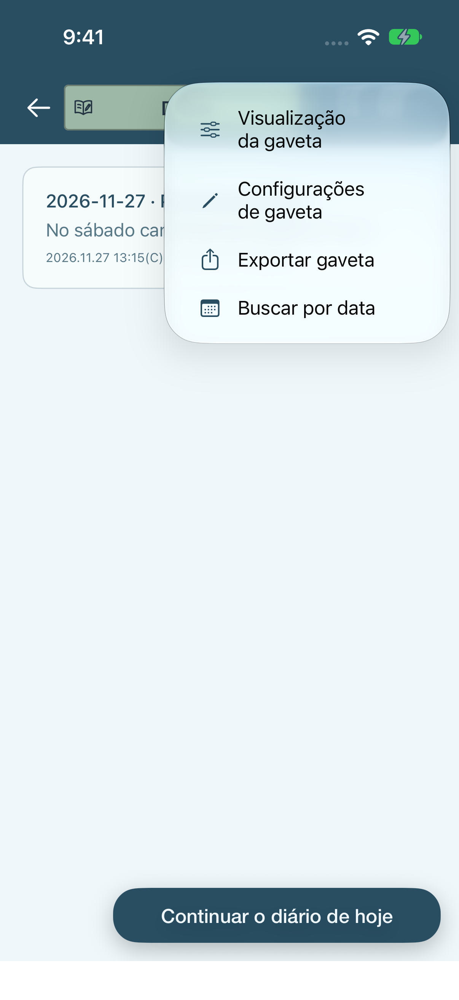
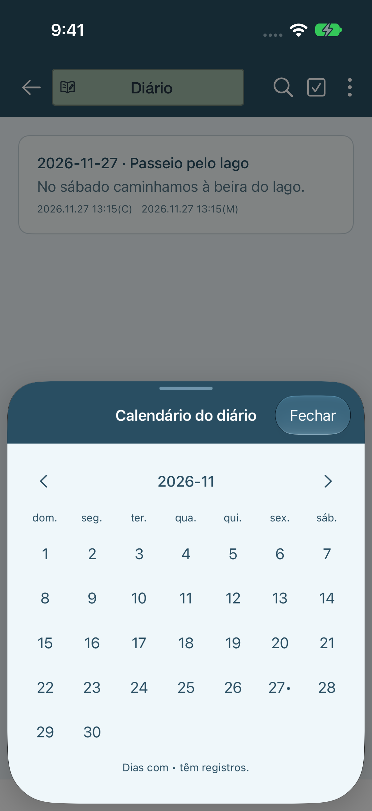
Continuar o recorde de hoje
Quando abro a gaveta do diário, continuo escrevendo os registros de hoje. A data é exibida automaticamente e um título curto pode ser escrito separadamente. Na primeira vez que você insere as informações, elas são salvas e não são criadas notas em branco para os dias em que você não registrou nada.
Lendo e editando registros anteriores
Selecione um dia com um registro no ícone do calendário ou abra-o na lista de registros. Os registros anteriores são somente leitura, mas você pode ampliar as fotos, marcá-las como importantes, compartilhá-las e movê-las para a lixeira.
Ao pressionar Desbloquear Editar, orientaremos você sobre o que significa preservar os registros daquele dia. Não o mantém somente leitura e Editar permite a edição do registro atualmente aberto. Se eu fechá-lo e reabri-lo, ele voltará ao modo somente leitura. Mesmo depois da meia-noite, os registros que você já gravou podem ser salvos até você fechar a tela.
As agendas não passam diretamente para outras gavetas. Mesmo se você restaurá-lo da Lixeira, ele manterá a data do histórico. Para renomear e recriar gavetas, consulte Criação e gerenciamento de gavetas.
↑ Para o índice6. Tarefas de hoje, horário, notificação e configurações de repetição
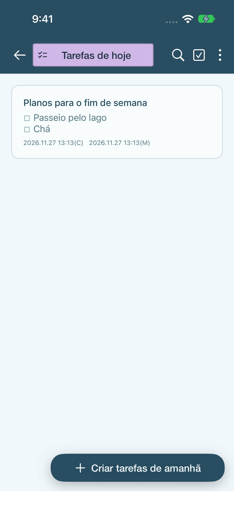
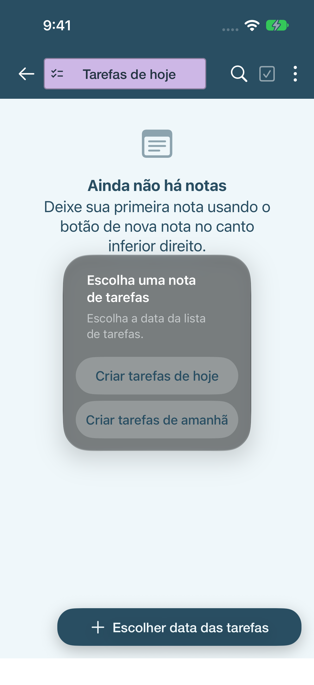
Criar listas de hoje ou amanhã e restaurar listas excluídas
Se faltarem as duas listas, use ＋ para escolher hoje ou amanhã. Se faltar uma data, só aparece o botão dela; se ambas tiverem conteúdo, o botão fica oculto. Caixas vazias não contam, mas anexos contam. Filtros de busca não mudam essa regra. Planejar amanhã não adianta a transferência das tarefas pendentes de hoje.
Ao excluir uma lista, o original e os anexos ficam na lixeira. Repetições e transferências não recriam essa data excluída. Criar manualmente inicia uma nova lista. Se houver outra lista para a mesma data, mova-a para a lixeira antes de restaurar o original. Conflitos continuam selecionados na restauração em lote. Originais sobrescritos só são recuperados com evidência local; apenas anexos que ainda existem podem ser copiados.
Adicionar/concluído/marcar item como importante
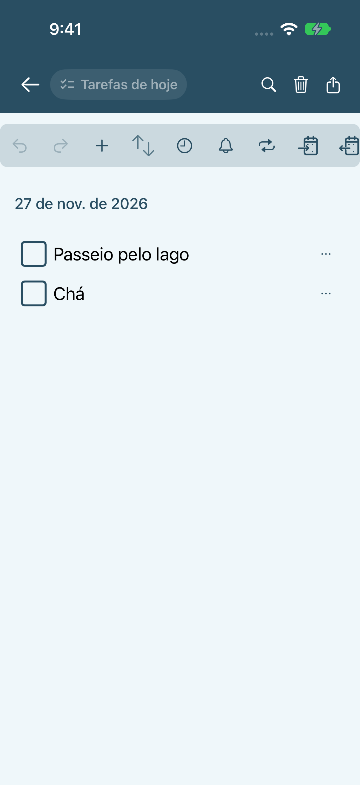
- Adicionar item (+): Adicione uma nova tarefa. Você também pode escrever o nome do item e pressionar Enter para continuar no próximo item.
- caixa de seleção: Alterações concluídas e incompletas. Os itens concluídos terão um tachado.
- Veja mais itens à direita (…): Configurações de horário de abertura·Configurações de notificação·Configurações de repetição·Marcas de prioridade·Excluir itens.
- Marcar nota com estrela: ativa ou desativa o realce no menu de itens. Itens importantes estão marcados com estrelas. É separado da estrela no título da data.
- Excluir item: Exclui apenas uma linha selecionada. Limpar um item repetido também interromperá repetições futuras. Distinga-o do botão de lixeira no cabeçalho, que exclui a nota inteira.
Para configurá-lo com a ferramenta superior, primeiro posicione o cursor clicando na letra do item a ser alterado. Os botões de relógio, campainha e repetição aplicam-se ao item atual. As ferramentas que não estão disponíveis ficam esmaecidas. Se você não conseguir ver todas as ferramentas, tente deslizar a barra de ferramentas para a esquerda ou para a direita.
Reordenar itens
Ative Modo de movimento para itens com setas para cima e para baixo sobrepostas na parte superior. Pressione e segure a alça de movimento que aparece ao lado do item e arraste-a para cima ou para baixo. Quando terminar de mover, pressione o mesmo botão novamente para retornar ao modo de escrita.
Defina um horário agendado
- À direita do item... → Pressione Definir horário. Alternativamente, passe o cursor sobre um item e pressione o botão superior do relógio.
- Defina um horário e confirme. O item exibirá o horário agendado.
- Para se livrar dele, abra Configurações de horário novamente e toque em Sem horário.
Apenas definir um horário não aciona uma notificação. Se você quiser notificações, configure-as separadamente.
Receba notificações
- À direita do item... → Pressione Configurar lembrete.
- Se você tiver um horário agendado, selecione notificações por hora, 10 minutos antes ou 30 minutos antes. Caso não tenha horário agendado ou queira recebê-lo em horário separado, utilize Escolher horário do lembrete.
- Salvar. Se o seu dispositivo solicitar permissão de notificação, conceda-a. Ao receber as instruções corretas de permissão de notificação, verifique também as configurações do dispositivo.
O ponto no tempo selecionado é exibido no círculo à esquerda. As permissões e ações de notificação necessárias estão descritas abaixo da lista de seleção. Para desligá-lo, selecione Sem lembrete. Se você remover um horário agendado, as notificações baseadas nesse horário também serão desativadas. O horário de notificação especificado é gerenciado separadamente. As notificações definidas para um item recorrente também serão aplicadas a repetições futuras.
As notificações exibem instruções de confirmação em vez de conteúdo de tarefas pendentes. A chegada pode ser atrasada dependendo da notificação do seu dispositivo e das configurações de economia de energia. As notificações de eventos do calendário e as notificações de aplicativos são separadas, portanto, verifique também Capítulo 7.
O que acontece com itens incompletos?
Tarefas incompletas sem repetição nem vínculo com calendário passam ao dia seguinte. Importância, hora, alerta, quantidade e contagem de adiamentos são preservados. Novas tarefas com o mesmo nome continuam distintas. Concluídas, recorrentes, histórico e anexos ficam na data original. Datas excluídas não são recriadas automaticamente.
Crie tarefas repetíveis
- Escreva o nome do item e… → Pressione Repetir tarefa.
- Escolha entre Selecione diariamente, dia da semana, fim de semana, dia da semana. Na seleção de dias, você pode selecionar vários dias da semana.
- Pressione Salvar. Você pode alterar as configurações do item reabrindo-os.
Por exemplo, se você selecionar apenas quinta-feira, terá um novo item inacabado toda quinta-feira. Repita independentemente de ter sido concluído da última vez.
- Verifique a conclusão é a marca de conclusão do dia. Depois, a iteração continua.
- Alterar nome, dia da semana e marcas importantes reflete itens recorrentes incompletos depois de hoje. Manter registros anteriores e itens concluídos.
- Não repita ou exclua itens anula iterações futuras e também remove entradas de iterações incompletas futuras pré-criadas.
- Quando você abre o aplicativo alguns dias depois, ele é complementado com o que você precisa para hoje. Não cria uma lista de todas as datas passadas apenas com repetições.
Os itens recorrentes não são transferidos para o dia seguinte como os itens normais e inacabados. Programações recorrentes criadas separadamente com o mesmo nome são gerenciadas separadamente. Os itens vinculados a um calendário não podem ser alterados para tarefas recorrentes.
↑ Para o índice7. Conecte-se ao calendário do seu telefone
Use eventos do calendário conectado ao seu telefone. Você precisará permitir o acesso ao calendário e selecionar o calendário que aparece na lista. A integração direta com o Naver Calendar não é fornecida.
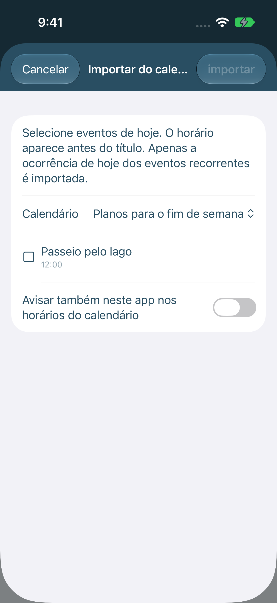
| função | O que você faz? |
|---|---|
| Adicionar ao calendário | Envie as tarefas de Anota Aí para o seu calendário. Atualizações futuras alterarão a programação do calendário. |
| Importar do calendário | Importe os eventos de hoje do seu calendário para as Tarefas de hoje. As atualizações subsequentes no calendário substituirão a entrada Anota Aí. |
Registrando tarefas pendentes no calendário
- Coloque o cursor sobre o item que deseja enviar nas tarefas de hoje ou de amanhã e toque no ícone Postar no calendário com uma seta na parte superior.
- Verifique e registre calendário, data, disponibilidade para o dia todo, horário de início e término e notificações.
- Depois de editar uma tarefa, atualizá-la a partir do mesmo botão alterará a programação conectada existente.
Um indicador de link aparece nos itens registrados. Tarefas recorrentes não podem ser enviadas para o calendário. Mesmo que você conclua, exclua ou mova uma tarefa para o dia seguinte, os eventos da agenda já registrados serão mantidos. Para excluir eventos da agenda, use o aplicativo de agenda.
Obtenha os eventos de hoje em sua agenda
- Abra sua lista de tarefas para a data de hoje e toque em Ícone de importação com um calendário e uma seta para a esquerda na barra de ferramentas superior. Se você não conseguir ver todas as ferramentas, tente deslizar a barra de ferramentas para a esquerda ou para a direita.
- Selecione um calendário e verifique e importe os itens necessários da programação de hoje.
- Para trazer de volta o conteúdo mais recente, passe o cursor sobre o item e toque no ícone de calendário na parte superior. Verifique o título, a hora, o local e o calendário da visualização e pressione Atualizar no calendário.
Você pode verificar o título, horário, local e informações de calendário da programação importada. A hora é exibida separadamente do título e os eventos do dia inteiro são exibidos como o dia todo. Agendas já conectadas não serão importadas como duplicatas. Os eventos recorrentes no calendário recuperam apenas o episódio de hoje. As verificações de conclusão são gerenciadas apenas por Anota Aí.
↑ Para o índice8. Use uma lista de compras
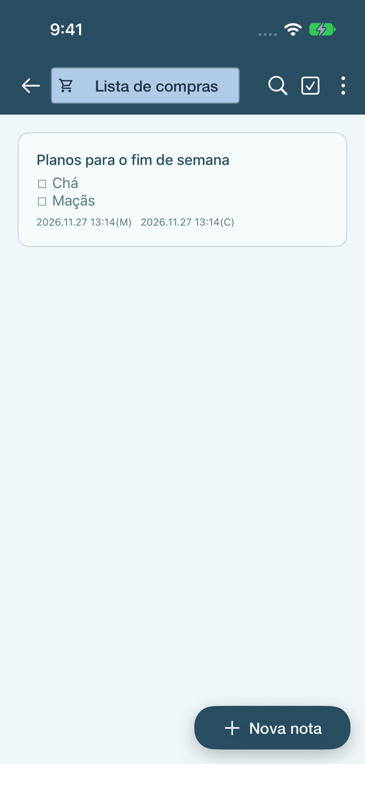
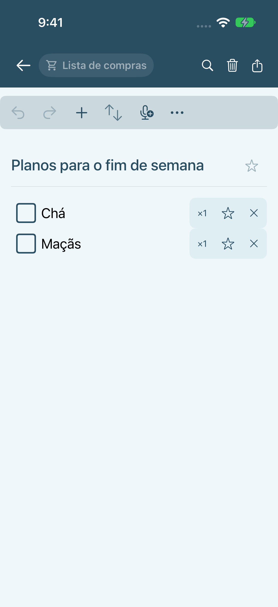
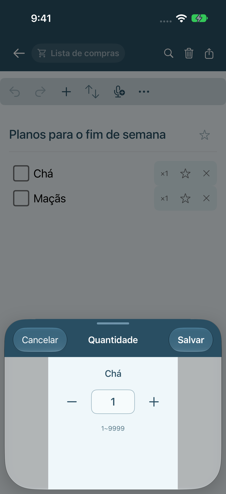
- Crie uma nova nota na gaveta da lista de compras e nomeie o item de mercearia.
- Insira o nome do item e pressione a quantidade (× número) após o item.
- Defina a quantidade usando os botões −·+ ou inserindo números. O padrão é 1 e a entrada é de 1 a 9999.
- Depois de comprar o item, clique na caixa de seleção na frente dele. Por favor, coloque uma estrela nos itens que você deve comprar.
Você pode criar várias listas para cada item de mercearia. Para obter informações sobre como adicionar itens e modos de movimentação, consulte Ferramenta de lista de tarefas de hoje. Os botões de quantidade, estrela e exclusão estão disponíveis diretamente atrás dos itens de compras. As listas de compras não possuem configuração de repetição. Para obter instruções sobre como usar o widget, consulte Usando widgets da tela inicial.
↑ Para o índice9. Usando widgets da tela inicial
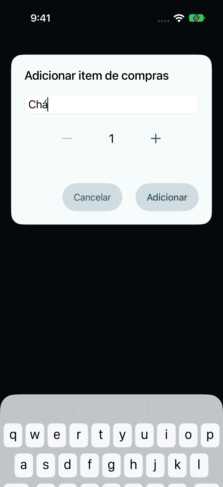
Adicionar widget
Mantenha pressionada uma área vazia da Tela de Início. No menu de edição, abra a galeria de widgets, procure NoteOrNever e adicione o widget de tarefas de hoje ou da lista de compras.
O que você pode fazer em widgets
- Ao pressionar a linha do item, ele muda entre concluído/incompleto ou comprado/não adquirido.
- ＋ abre a tela de adição rápida do aplicativo para colocar itens nessa lista.
- Toque em um título ou abra uma nota para abri-la no aplicativo.
- O ícone de asterisco/repetição é apenas para fins de exibição. Alterações importantes de marcação, repetição, quantidade e pedido são feitas no aplicativo.
O widget Tarefas de hoje mostra a lista da data de hoje e o widget Compras mostra a lista ativa modificada mais recentemente. A contagem restante é o número de itens incompletos e não o total da quantidade do item.
ordem de exibição
O pedido é Importante Incompleto → Geral Incompleto → Importante Concluído → Geral Completo. Mantém a ordem original dos itens do mesmo pacote. A classificação de widgets não altera a ordem na nota.
Widget para gaveta trancada
Quando você bloqueia uma gaveta, o widget oculta seu conteúdo. Mesmo se você autenticar no aplicativo e abri-lo brevemente, o widget permanecerá oculto. Abra o aplicativo para verificar o conteúdo ou desbloqueie a gaveta para exibi-lo novamente no widget. O processamento de data para itens recorrentes continua durante o bloqueio.
↑ Para o índice10. Encontrar notas e gerenciar a Lixeira
intervalo de pesquisa
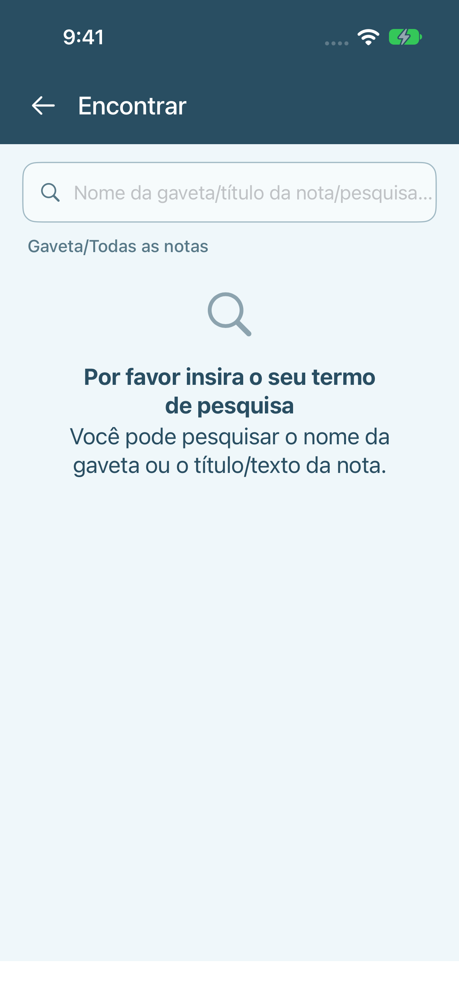
| Encontre a localização do botão | O que procurar |
|---|---|
| cômoda | Nomes de múltiplas gavetas e título/corpo do memorando |
| Dentro da gaveta | Título e corpo da nota na gaveta atual |
| Na nota | Corresponde aos caracteres do corpo da nota atual |
Toque na lupa na gaveta, insira um termo de pesquisa e toque na gaveta ou nota nos resultados. Na gaveta, apenas as notas com termos de pesquisa permanecem na lista. Dentro da nota, as letras correspondentes são destacadas e o conteúdo permanece inalterado. X fecha Localizar. Para encontrar o manual, consulte Usando o manual.
Gavetas bloqueadas são excluídas do alvo de pesquisa padrão. Pesquisar conteúdos de gavetas bloqueadas Você pode incluí-los autenticando clicando em Incluir (requer autenticação). O conteúdo criptografado também é pesquisado após a autenticação.
Selecione várias notas
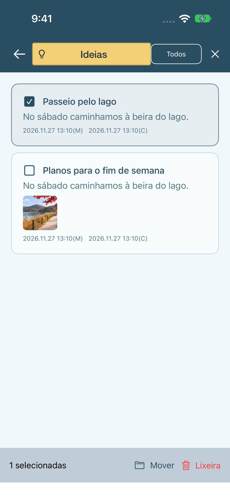
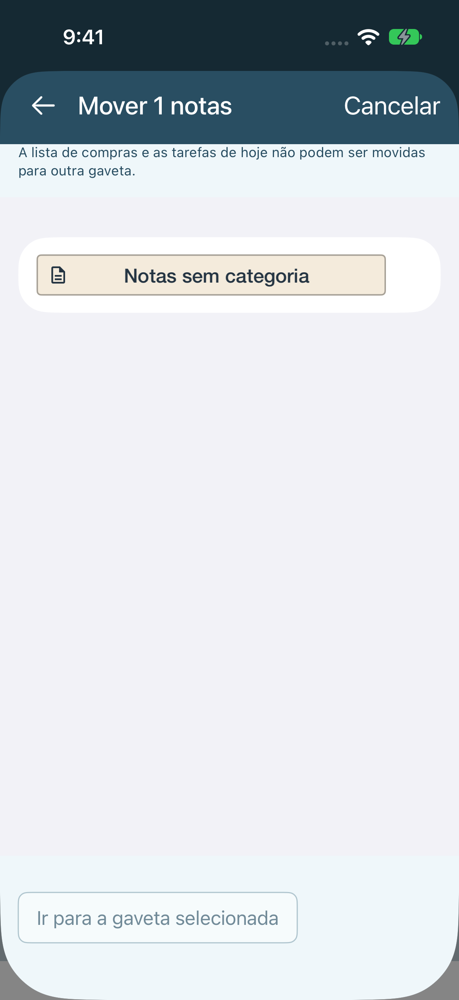
- Pressione o botão Selecionar (marca de seleção) no cabeçalho da gaveta.
- Selecione a nota que deseja processar na lista.
- Toque em Mover gaveta ou Mover para a lixeira na parte inferior. Ao mover uma gaveta, selecione o destino e confirme com o botão mover. Somente notas normais que podem ser movidas podem ser movidas para outra gaveta.
Se você vir Desfazer nas instruções abaixo após a ação, você pode tocar nele para reverter a ação que acabou de realizar. O tempo de exibição padrão é de aproximadamente 5 segundos e pode ser maior dependendo das configurações de acessibilidade. Pressione Voltar para finalizar sua seleção.
Mover uma nota para a lixeira
Pressione o botão Mover para a lixeira no cabeçalho da nota de edição e confirme. O botão está desabilitado para notas vazias sem título, corpo ou anexos. Um X após um item exclui uma única linha, e a lixeira no cabeçalho do memorando exclui o memorando inteiro.
Restaurar da Lixeira
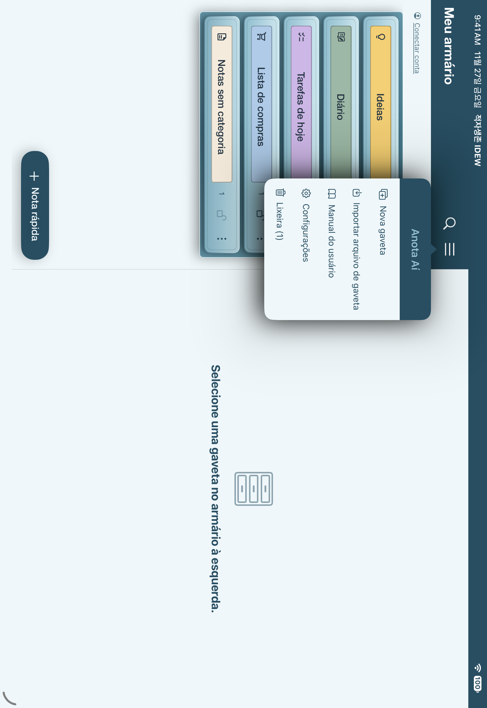
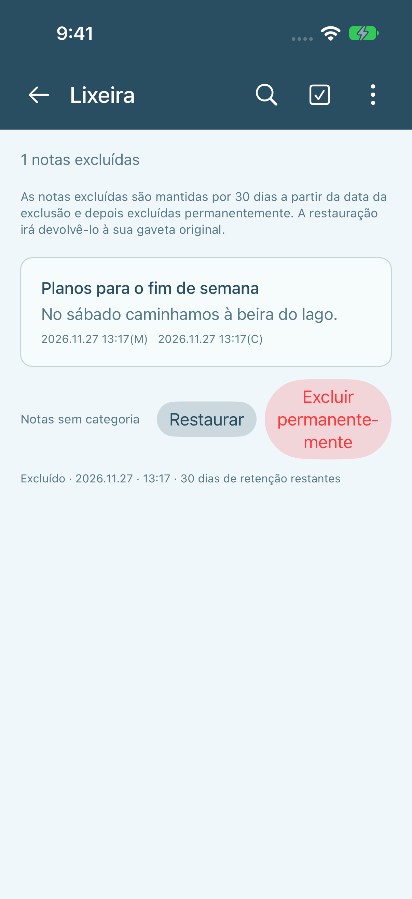
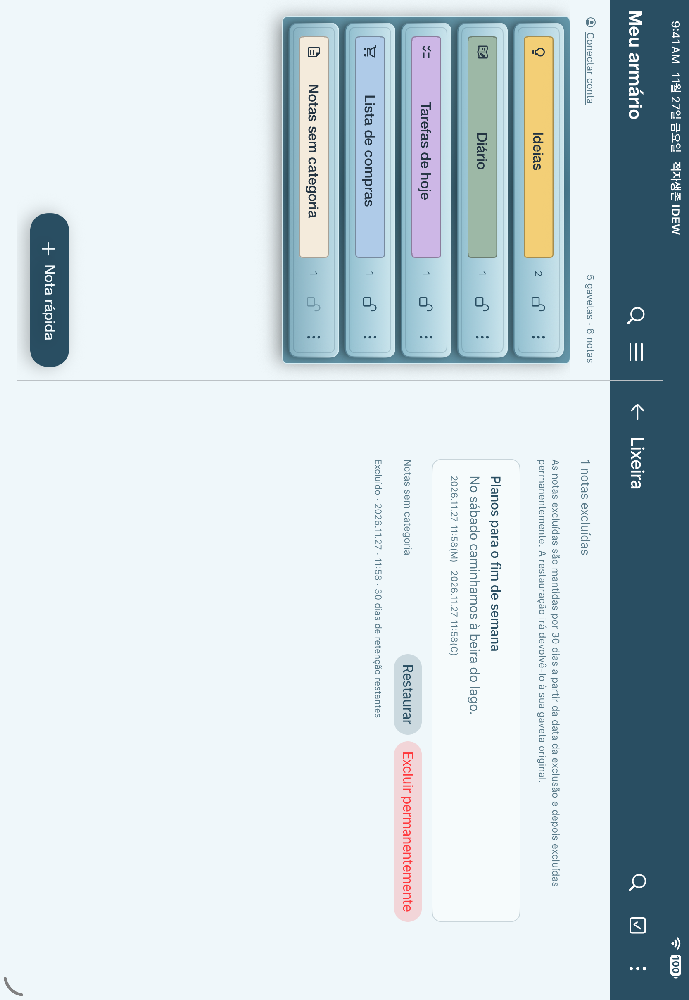
- Abra o menu do armário (☰) e toque na lixeira.
- No lado esquerdo da linha com os botões Restaurar/Excluir Permanente do cartão de notas, verifique o ícone e o nome da gaveta original. Pressione Restaurar da nota que deseja reviver. Se necessário, abra primeiro a nota para verificar seu conteúdo.
- Verifique as notas restauradas na gaveta original. Ao excluir uma gaveta, as notas movidas para notas não classificadas podem ser conferidas em notas não classificadas.
Para visualizar notas de gaveta bloqueada, autentique com Incluir notas de gaveta bloqueada (autenticação necessária) acima. 30 dias após passar para a Lixeira, ele será excluído automática e permanentemente junto com todos os anexos. Dependendo da condição do dispositivo, a limpeza pode demorar. Se você restaurá-lo antes de 30 dias, ele será excluído da limpeza, e se você movê-lo de volta para a Lixeira, ele será contado novamente a partir de então.
↑ Para o índice11. Bloqueie e criptografe gavetas
Alterar ou redefinir a senha expira as sessões anteriores. A nova sessão mantém a mesma chave, preservando notas e anexos e permitindo sincronizar com outros dispositivos. Reconecte a biometria. O iOS não substitui uma configuração de criptografia existente ao instalar informações de recuperação.
| Método de proteção | diferença |
|---|---|
| Bloqueio de gavetas | Impede que os usuários abram conteúdo em aplicativos usando impressão digital ou autenticação PIN de 4 dígitos. |
| Criptografia da gaveta | O título, o corpo e os anexos do memorando são criptografados e armazenados, e os dados permanecem criptografados mesmo em backups e na lixeira. |
A criptografia não é aplicada à gaveta de backup que contém a lista de tarefas, lista de compras, memorandos não categorizados e outros dados de aplicativos do dia. Armazene registros pessoais importantes em uma gaveta comum que possa ser criptografada. Você pode usar o bloqueio padrão para as listas de tarefas e compras de hoje.
fechadura de gaveta básica
Em Configurações → Bloqueio de gaveta, defina o PIN, o uso da impressão digital e o tempo para bloquear automaticamente após sair do aplicativo. Toque no cadeado aberto para bloquear uma gaveta. Toque em uma gaveta bloqueada e autentique-se para abri-la. Para o comportamento do widget, consulte Usando widgets da tela inicial.
Configurando a criptografia pela primeira vez
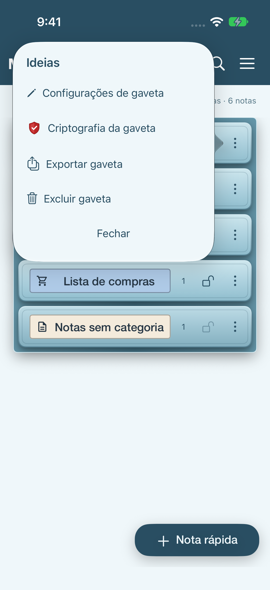
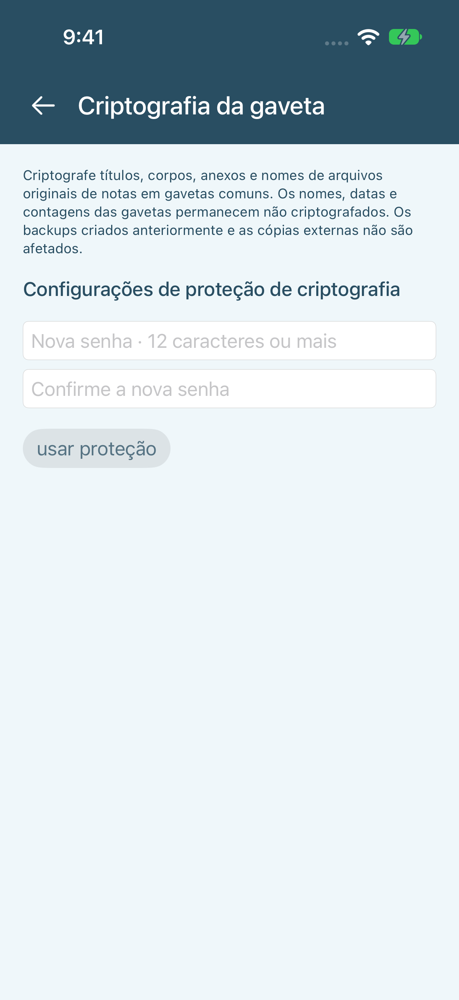
- Para a gaveta geral que você deseja proteger, toque em Mais → Criptografar gaveta.
- Digite sua senha de criptografia duas vezes (pelo menos 12 caracteres) e toque em Definir senha. Esta senha é diferente do PIN de bloqueio de 4 dígitos.
- Armazene a chave de recuperação exibida em um local seguro fora do aplicativo, como um papel ou um gerenciador de senhas.
- Marque Confirmar armazenamento e clique em Definir senha para concluir.
- Quando for avisado que esta gaveta ainda não está criptografada, clique em Ativar criptografia para aplicar.
Autentique e aplique proteção uma à outra gaveta em Mais → Criptografia de Gaveta. As gavetas de criptografia usam a mesma senha, portanto use a senha e a chave de recuperação que você definiu inicialmente. Se você cancelar antes de concluir a configuração, não use a chave de recuperação que viu então.
Distintivo de escudo e sinal de bloqueio
O Escudo vermelho, distintivo de cheque branco no canto superior direito da etiqueta da gaveta e a etiqueta do título dentro da gaveta indicam que a criptografia foi aplicada a essa gaveta. Mesmo se você autenticar e abrir o conteúdo, o selo não desaparecerá porque a criptografia será mantida. Um cadeado significa uma gaveta que deve ser aberta após a autenticação, e um escudo significa que os dados são criptografados e armazenados.
Abertura normal da gaveta e travamento automático
Abra a gaveta criptografada com a senha de criptografia ou com o Face ID ou Touch ID vinculado a este dispositivo. Ao sair da gaveta, ela é bloqueada novamente.
Vincular a biometria ou alterar a senha
Nos ajustes de criptografia de gavetas, vincule a biometria deste aparelho ou altere a senha. Se cadastrar o Face ID ou Touch ID novamente, use a senha de criptografia e refaça o vínculo.
A alteração da senha se aplica a todas as gavetas criptografadas. Os backups anteriores à alteração ainda exigem a senha usada quando foram criados. Faça um novo backup após alterar a senha.
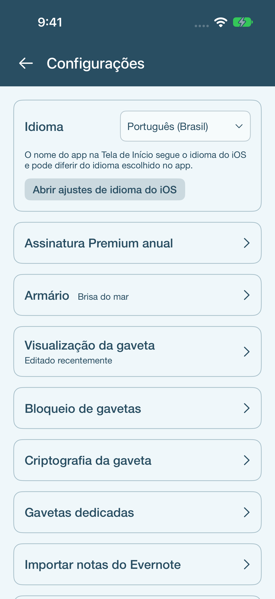
Quando você esquece sua senha
- Toque em Esqueceu sua senha? na tela de autenticação.
- Digite sua chave de recuperação salva e a nova senha, redefina sua senha e pressione Abrir.
A nova senha se aplica a todas as gavetas criptografadas. Cancelar retorna à tela de autenticação. O aplicativo não mostra a chave de recuperação novamente; registre-a corretamente durante a configuração inicial.
Remova a proteção de criptografia e exclua a gaveta
Na gaveta, vá para Mais → Descriptografar gaveta, autentique, verifique o nome da gaveta e pressione Desproteger. Os dados na gaveta selecionada serão armazenados sem criptografia. Se você cancelar, você manterá sua proteção. Para excluir uma gaveta, após desprotegê-la, selecione Excluir gaveta de mais.
Verifique a cobertura de proteção
- O nome da gaveta, o número de notas, as datas de criação e modificação e o tipo de anexo não são criptografados. Não inclua conteúdo confidencial no nome da gaveta.
- Este não é um recurso que criptografa todo o backup. Apenas o conteúdo da gaveta criptografada é protegido; gavetas normais e a lista de tarefas/compras de hoje não são criptografadas.
- Os backups feitos antes da criptografia ou cópias enviadas para aplicativos externos não são criptografados automaticamente. Gerencie você mesmo os arquivos compartilhados externamente.
12. Backup/restauração e importação do Evernote
Migrar para outro aparelho
Só tenho backup
Selecione o backup mais recente. A restauração substitui as notas e os anexos deste aparelho. Salve em arquivo o que deseja manter antes de confirmar.
Só tenho dados sincronizados
Conecte a mesma conta do aparelho anterior. Em Sincronização → Detalhes, escolha recuperar os dados sincronizados para baixar sem enviar alterações locais.
Tenho os dois
Restaure o backup primeiro. Sincronize agora apenas se outro aparelho sincronizou alterações depois do backup.
Por fim, procure uma nota do aparelho anterior e abra o anexo.
Sincronização automática e recuperação sem envio
Toque no estado à esquerda para ver a causa e o próximo passo. Em telas estreitas pode aparecer só o ícone. O modo gratuito oculta o estado.
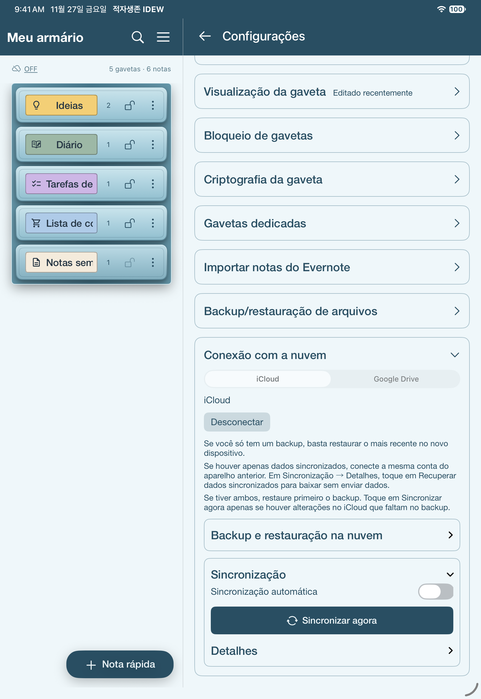
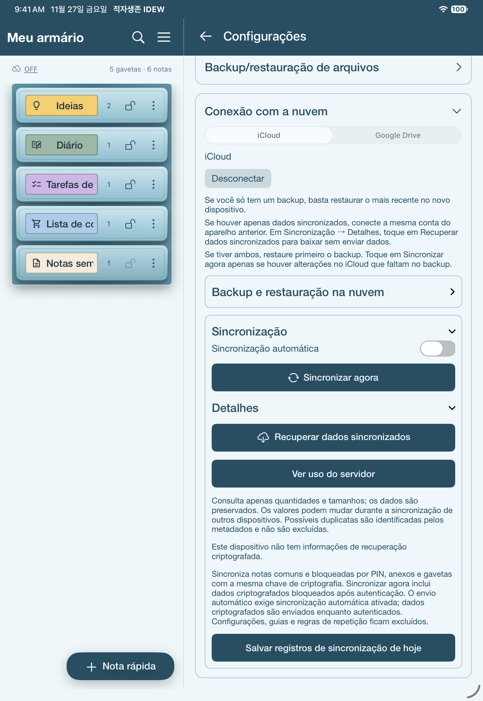
Se aparecer “Verificar proteção”, toque no aviso e escolha “Sincronizar agora”. Confirme sua identidade para iniciar a sincronização. O aviso desaparece quando a proteção é verificada.
Com a sincronização automática ativada, abrir e desbloquear uma gaveta criptografada verifica as alterações enviadas pelos outros dispositivos. Você recebe notas novas e edições mesmo sem ter editado nada neste dispositivo.
Depois de editar e sincronizar uma nota no celular, abra e desbloqueie a mesma gaveta no tablet. Primeiro aparece a cópia local. Ao fim da sincronização, aparece a versão atualizada. Se a sincronização automática estiver desativada, desbloqueie a gaveta e toque em “Sincronizar agora”.
Entender o estado da sincronização
Notas distintas permanecem separadas mesmo com o mesmo anexo. Se o backup foi feito antes da primeira sincronização e a nota restaurada difere da do servidor, ambas podem ser mantidas. Abra as duas antes de decidir qual excluir.
Limites temporários geram nova tentativa. Libere espaço na nuvem se estiver cheia ou reconecte a conta original se o acesso tiver sido revogado. O app tenta reparar anexos danificados usando o servidor. Se falhar, a nota fica pendente e as demais são sincronizadas. Edições sem ordem identificável podem gerar uma cópia de conflito.
A sincronização comum isola todas as revisões dos IDs de notas e gavetas atualmente protegidas, incluindo movimentações e exclusões anteriores, e continua com os demais dados comuns. O histórico isolado e as alterações não enviadas ficam no dispositivo. Se a autenticação da criptografia expirar ao publicar informações de recuperação, a fila será mantida; autentique-se novamente e sincronize para tentar de novo. Falhas reais de verificação da recuperação continuam sendo erros.
A recuperação não envia notas, anexos nem informações de recuperação. Edições e alterações pendentes ficam no dispositivo e podem ser enviadas ao sincronizar depois.
Em Sincronização, ative ou desative a sincronização automática. Sincronizar agora executa uma vez sem alterar essa configuração. A recuperação somente para receber não envia edições locais.
Se houver informações de recuperação criptografada, autentique com senha ou chave de recuperação, ou recupere apenas dados comuns. A verificação dessas informações no Drive é separada do envio de notas. Interromper mantém etapas concluídas e alterações não enviadas. Execute a mesma operação para continuar. Confira o conteúdo após erro de gravação e conclua a edição e o salvamento antes de tentar novamente.
Faça backup e restaure para arquivos locais
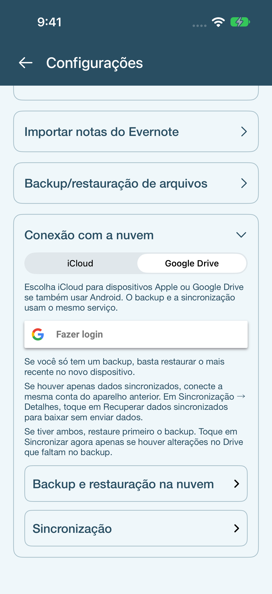
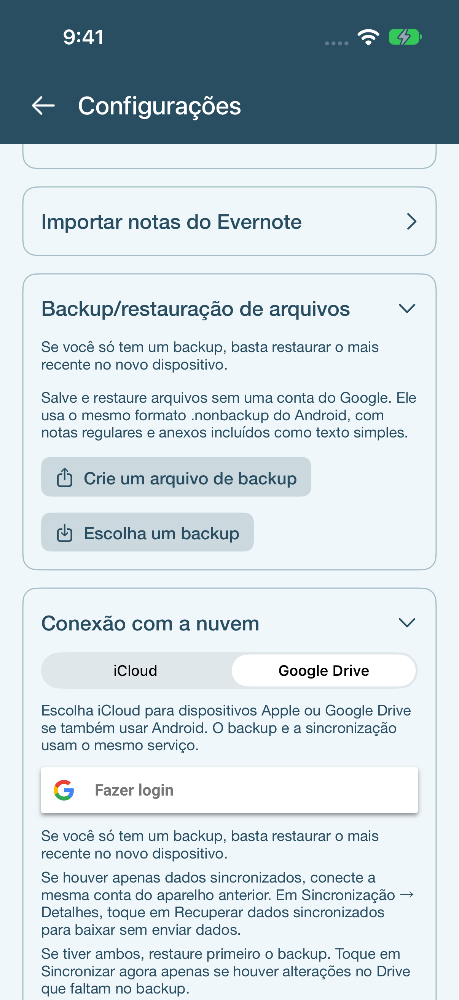
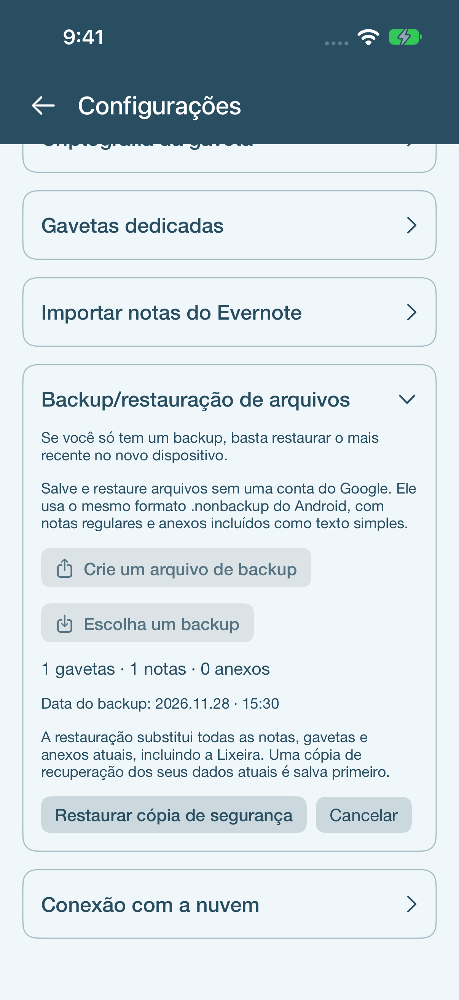
- Abra Backup e restauração local na parte inferior de Configurações.
- Toque em Salvar arquivo de backup e selecione uma pasta e um nome de arquivo para salvar no aplicativo Arquivos. .nonbackup Armazena gaveta, memorando, lixeira, configurações e arquivos anexados juntos em um único arquivo.
- Toque em Restaurar do arquivo e selecione o arquivo de backup salvo. Verifique a data, número de gavetas, notas, anexos e instruções de substituição.
- Clicar em Restaurar substitui os dados atuais pelo conteúdo do backup. Esta não é uma operação para mesclar com os dados atuais. Se você cancelar, isso não será aplicado.
- O estado imediatamente antes da restauração é armazenado no dispositivo. Você pode voltar para reverter sua última restauração.
O backup em arquivo funciona sem conectar uma conta. Em Arquivos, escolha No Meu iPhone, No Meu iPad ou iCloud Drive. Configure um PIN para restaurar gavetas bloqueadas e guarde a senha ou os dados de recuperação do conteúdo criptografado.
O backup iCloud / Google Drive é um backup manual
Abra Configurações → Conexão com a nuvem → Backup e restauração na nuvem. Para salvar, toque no botão do serviço escolhido. Para restaurar, carregue a lista e confira a data e a quantidade de notas antes de selecionar o backup.
Gaveta, memorando, anexo, configurações de repetição e notas restantes na lixeira também estão incluídos no backup. Depois de fazer qualquer alteração importante e antes de trocar de telefone, crie um novo backup e siga as instruções para concluí-lo.
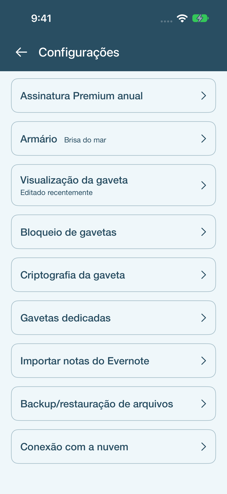
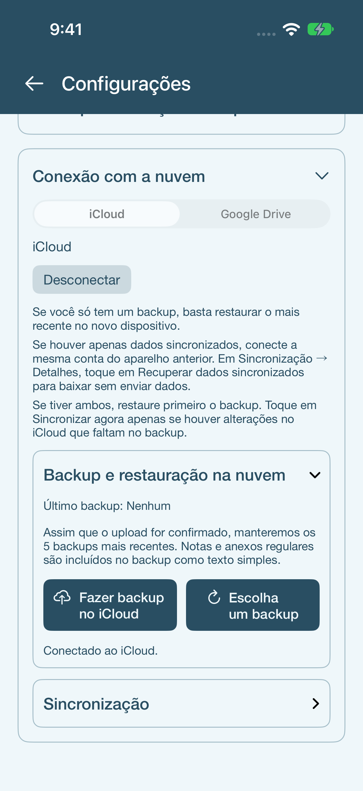
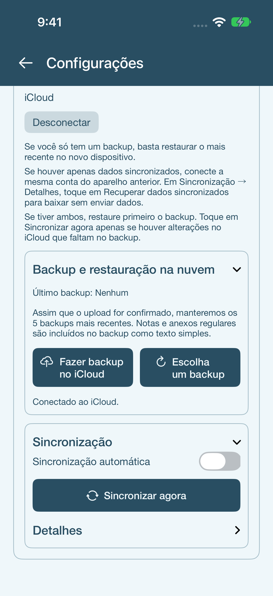
Armazenamento e exclusão de backup
Depois que o novo backup for carregado e confirmado com sucesso, os backups mais antigos serão excluídos automática e permanentemente, restando os cinco mais recentes. Um backup com falha não apaga os backups existentes. O critério de retenção não é o período, mas o número; portanto, se você fizer backup com frequência, todos os cinco poderão ser recentes.
Para apagá-lo manualmente, abra a lista com Restaurar do backup e pressione Excluir para o backup que deseja apagar. Depois de confirmar o nome do arquivo e excluí-lo permanentemente, ele não poderá ser restaurado. As notas do seu telefone atual não serão apagadas. Para backups de longo prazo, armazene-os separadamente antes da limpeza automática.
Restaurando do backup
Importar notas do Evernote
- No aplicativo Evernote no seu PC, exporte as notas ou cadernos que deseja mover para ENEX (.enex). Se houver criptografia corporal, desative-a primeiro.
- Copie o arquivo ENEX para a pasta de download do seu telefone, etc.
- Selecione um arquivo em Configurações → Importar notas do Evernote → Selecione o arquivo ENEX.
- Verifique o título e o número na visualização e clique em Importar Nota do Evernote.
- Verifique e faça backup do conteúdo e anexos da gaveta de notas importadas do Evernote.
Obtenha título, corpo, marca de seleção, formato básico, anexos e datas de criação/modificação. Tags e endereço original são exibidos no final do texto. Tabelas ou formatos complexos podem variar e as estruturas de notificação, tarefa e bloco de notas não serão convertidas automaticamente. Organize as anotações necessárias em outra gaveta normal.
Duplicatas do mesmo material serão ignoradas, mas materiais com conteúdo alterado ou data de revisão poderão ser adicionados como notas separadas. Ele não sincroniza automaticamente com o Evernote nem substitui notas existentes. As notas originais e os arquivos ENEX não serão excluídos. Se o arquivo for grande ou falhar, divida-o em lotes menores e teste-os primeiro. O formato suportado é ENEX e o limite é Limitações de capacidade e comprimento.
Selecione materiais que você possui ou tem permissão para importar. A importação é processada dentro do dispositivo e quando você executa o backup iCloud / Google Drive, os dados importados também são incluídos no backup. O arquivo ENEX original não é protegido por criptografia de gaveta, portanto, cuide também de sua cópia. Esta função não é uma função oficial de parceria/autenticação do Evernote. Evernote® é uma marca registrada de Bending Spoons US Inc..
↑ Para o índice13. Usando configurações e manuais de aplicativos
O limite gratuito é de sete gavetas, incluindo as iniciais. Ao chegar a sete, criar ou importar outra fica restrito. O Premium remove anúncios e permite mais gavetas, nova criptografia e transferências na nuvem. Após o vencimento você ainda pode abrir as gavetas existentes e ler ou descriptografar o conteúdo.
Em Configurações, abra Conexão com a nuvem. Escolha iCloud para aparelhos Apple ou Google Drive para incluir Android. Conecte um serviço por vez com o Premium. Use Backup e restauração na nuvem para backups manuais e Sincronização para sincronizar manual ou automaticamente. Se o iCloud estiver indisponível nesta versão, você pode usar o backup em arquivo. A compra exige um produto disponível na App Store.
Desconectar preserva as notas e os anexos locais. Reconecte a conta usada para backup ou sincronização. Para usar outra conta, exporte o que deseja guardar e confirme a redefinição dos dados do aparelho na seção de backup local.
Abra menu → Configurações → Armário e edite o nome. Use um nome não vazio de até 40 caracteres. Os temas ficam abaixo no mesmo cartão.
idioma do aplicativo
Suporta coreano, inglês, japonês, hindi, português (Brasil), espanhol e indonésio. Mesmo se você alterar o idioma, o conteúdo das suas notas não será alterado.
Tema do armário
Deslize o cartão de visualização para a esquerda ou direita e clique no tema desejado. O tema padrão é Sea Breeze. O tema padrão tem Sea Breeze, Blue Sky, Soft Green, Lavender Mist, Korean Paper, Honeycomb, Black and White, Classic Wood e o tema sazonal tem Primavera, Verão, Outono, Inverno, Natal.
As cores do tema são aplicadas à tela e aos ícones do aplicativo. O ícone do aplicativo na tela inicial será refletido quando você sair do aplicativo e desligar e ligar a tela. Dependendo do aplicativo na tela inicial, a renovação pode ser adiada. Se você usou anteriormente Light Oak ou Warm Walnut, ele será exibido como Sea Breeze.
Visualização de notas
Determine a ordem de classificação da lista e a prioridade de exibição de notas importantes.
Gavetas dedicadas
A antiga gaveta de backup de outros apps foi desativada. Notas, inclusive na Lixeira, ficam numa gaveta comum de dados anteriores com nome único. Só gavetas vazias são excluídas. Backup de arquivos e do Drive, recuperação e exportação continuam disponíveis.
Bloquear/Importar/Backup
O bloqueio e criptografia de gaveta estão em Capítulo 11, importação Evernote e nuvem, e backup e restauração locais estão em Capítulo 12. O Backup e Restauração Local está na parte inferior das Configurações.
Ler/encontrar/compartilhar documentação
Abra menu (☰) → Manual. Use o índice, a busca no texto e o compartilhamento em PDF.
Se você inserir um termo de pesquisa de Buscar no cabeçalho, as correspondências serão destacadas. Vá até o número do resultado e as setas para cima e para baixo e feche Localizar com X. compartilhar envia o manual como PDF. Texto explicativo e exemplos de tela são exibidos no idioma selecionado nas configurações. As mesmas imagens de ícones são compartilhadas entre todos os idiomas.
Após seguir um link, toque na seta curva do cabeçalho para voltar ao ponto de leitura. Fechar leva à tela em que você abriu o guia.
O texto do guia e os ícones compartilhados estão disponíveis sem internet. Ao abrir o guia pela primeira vez, somente as imagens do idioma selecionado são baixadas. Depois de baixadas, elas continuam disponíveis offline, mesmo após reabrir o aplicativo. Se não conseguir baixar as imagens, conecte-se à internet e toque no botão para tentar novamente. Ao compartilhar um PDF antes do fim do download, as imagens ainda não baixadas ficam de fora.
Sempre que você abre o guia, o aplicativo verifica se há imagens atualizadas. As imagens salvas aparecem primeiro e só são substituídas quando o download e a verificação terminam. Sem internet ou se a atualização falhar, as imagens salvas continuam disponíveis.
Quando um recurso não funciona
- Se Câmera, Voz, Gravação e Calendário não abrirem, verifique as permissões do aplicativo nas configurações do seu dispositivo.
- Se a lista de calendários estiver vazia, verifique sua conta no aplicativo de calendário do seu telefone e quais calendários você deseja exibir.
- Se você não receber uma notificação de tarefas, verifique a permissão de notificação e as configurações de economia de energia nas configurações do seu dispositivo.
- Se o backup do nuvem falhar, verifique sua conexão com a Internet, conta de conexão e espaço de armazenamento.
- Se você não conseguir encontrar o arquivo de backup local, verifique a pasta salva e a extensão .nonbackup no aplicativo Arquivos.
Limitações de capacidade e comprimento
| item | limites |
|---|---|
| Título/corpo do memorando | Título 200 caracteres, corpo 30.000 caracteres. Recomendamos que você escreva o texto em seções se tiver mais de 10.000 caracteres. |
| Capacidade anexada | Um arquivo de 30 MB, um anexo de memorando totalizando 200 MB |
| Número de anexos | Um total de 50 notas em uma nota, incluindo 30 fotos. |
| Foto/imagem | Foto original 40 milhões de pixels. Até 2.048 pixels no lado longo podem ser usados para editar/girar e salvar imagens. |
| Importar Evernote | Um ENEX tem 100 MiB (cerca de 105 MB), 5.000 notas. As restrições de título, corpo e anexo também se aplicam às notas importadas. |
| Restauração local·Google Drive | Até 2GiB de arquivos de backup. Backups grandes requerem mais tempo e espaço de armazenamento. |
Se você encontrar restrições, verifique as instruções para dividir notas ou arquivos. Se a gravação durar mais de 30 minutos, é recomendável armazená-la separadamente e também se aplicam limites de tamanho de arquivo. Libere espaço no seu telefone antes de fazer backup, restaurar, anexar ou criptografar.
↑ Para o índice